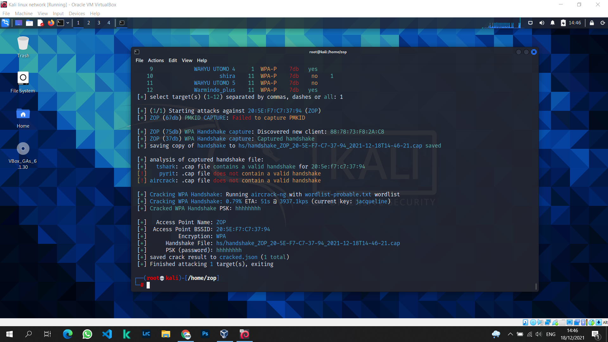
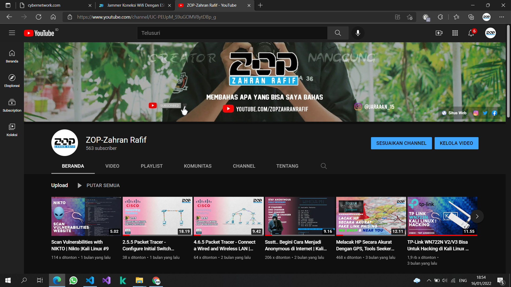

Blog
NodeMcu Jammer Wifi

Kita harus mengenal dulu tools yang satu ini. Namanya adalah Wifite, dilansir dari website kali linux wifite yaitu alat untuk mengaudit jaringan nirkabel terenkripsi WEP atau WPA. Ia menggunakan alat aircrack-ng, pyrit, reaver, tshark untuk melakukan audit.
Alat ini dapat disesuaikan untuk diotomatisasi hanya dengan beberapa argumen dan dapat dipercaya untuk berjalan tanpa pengawasan.
Cara menginstall Wifite di Kali Linux
Kalian hanya cukup ketik saja perintah di Terminal, ingat posisi dalam keadaan sudah masuk ke mode root.
Install : sudo apt install wifite
Biasanya Wifite sudah terinstall didalam Kali Linux.
Wifite

Apa sih ESP8266 itu? Merupakan sebuah modul wifi dengan harga yang cukup terjangkau dengan stack TCP/IP dan juga dapat berfungsi sebagai perangkat tambahan mikrokontroler seperti Arduino. Modul ini membutuhkan daya sekitar 3.3v dan dilengkapi dengan prosessor,
GPIO dan memori agar dapat menyimpan program yang sudah kita masukan. Modul ESP8266 ini diproduksi oleh Espressif Systems di Kota Shanghai, Cina. Nah setelah kita tau bahwa modul ini bisa diprogram sesuai keinginan kita, untuk tutorial flashing firmware akan dibuat artikel baru tunggu ya!.
Mengapa kita harus belajar Cyber Security

Cyber security memang berdampak secara langsung dalam kesuksesan sebuah perusahaan. Apalagi, cyber security merupakan salah satu faktor yang menjadi cara menilai kemampuan perusahaan dalam mengamankan data-data pentingnya. Hanya saja, perusahaan kerap mengabaikan hal ini.
Hal tersebut bisa dilihat dalam survei yang dilakukan oleh Kaspersky Lab pada rentang 2011-2014. Dalam survei ini, diketahui kalau sebanyak 27% perusahaan mengalami kehilangan data akibat minimnya keamanan TI. Bahkan, secara khusus bisnis infrastruktur seperti telekomunikasi punya tingkat kerentanan perangkat lunak yang sangat tinggi, mencapai 35%.
Selain itu, pemberitaan mengenai tingkat kerentanan cyber security perusahaan ternama dunia juga kerap muncul di jagat maya. Salah satunya adalah serangan hacker yang secara masif menimpa Yahoo beberapa waktu lalu. Dalam serangan hacker tersebut, sebanyak 1 miliar data pengguna Yahoo berhasil dicuri.
Berikut bentuk-bentuk serangan siber yang perlu kita waspadai:
- 1. Malware
- 2. Phishing
- 3. Ransomware
- 4. Social Engineering
Youtube Channel

Youtube Zop-Zahran Rafif adalah salah satu Channel Youtube yang membahas tentang dunia Kali Linux.
Kamu dapat belajar Hacking, Scan Jaringan, Jammer Wifi, dan masih banyak lagi. Bukan hanya soal teknologi
namun channel ini memiliki kategori Otomotif juga, karena saya menyukai dunia otomotif.